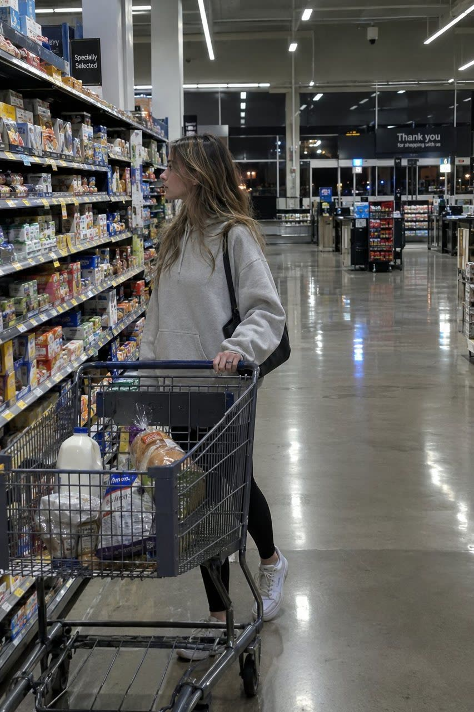

Empty supermarket at night, candid
REA-012Realismunspecifiedby prompttolife (@prompt2llife)2026-09-27

Ultra-real candid photo shopping alone in a near-empty night supermarket — fluorescent light, natural skin.
Prompt
Ultra-realistic 8K candid photo of a beautiful young woman shopping alone in a nearly empty supermarket at night. She has a natural fresh face, slightly messy long hair, and realistic human skin texture. She wears an oversized light grey hoodie, black leggings, and white sneakers, pushing a shopping cart with milk, bread, and a few snacks inside. Side view as she calmly looks at the supermarket shelves and reads product labels. Bright cool fluorescent lighting, shiny reflective floor, long grocery aisles, closed checkout lanes in the background, quiet 10 PM atmosphere. Natural documentary photography, realistic proportions, subtle film grain, shallow depth of field, Sony A7III, 35mm lens, f/2.2, unretouched RAW look, no artificial beauty filter, no plastic skin.
Our Seedance 2.5 adaptation
[ADAPTED for Seedance 2.5 by Grok Bot; not the creator's prompt. Follows the official BytePlus Seedance 2.5 prompt guide: asset binding → one-sentence summary → integer-second timeline → consistency notes → negatives.] API: duration 10, ratio 16:9, resolution 1080p, generate_audio true. Assets: Image 1 is the woman (identity lock: grey hoodie, black leggings, white sneakers). Summary: A 10-second quiet, observational one-take of the woman from Image 1 shopping alone in a nearly empty supermarket at 10 PM under cool fluorescent light. 0-4s: Side-on tracking shot at walking pace along a long aisle as she pushes a cart holding milk, bread and snacks. The reflective floor mirrors the lights. 4-8s: She stops, picks up a product, reads the label and puts it back. One fluorescent tube flickers. 8-10s: She pushes on toward the closed checkout lanes in the background. The camera stops and lets her walk away. Look: natural documentary realism, 35mm lens, subtle grain, real skin texture. Keep consistent: one continuous take with no cuts. No other shoppers. Audio: fluorescent hum, cart wheels, a freezer compressor, a faint store PA tone. No BGM. No subtitles, no readable labels.
Tags: candid, fluorescent, night